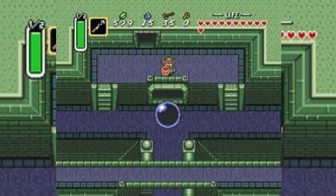

The Legend of Zelda: A Link to the Past

Fecha de lanzamiento: 21 de noviembre de 1991
Género: Acción-aventura
Desarrollador: Nintendo
Copias vendidas: 4.61 millones
Sinopsis: El joven héroe Link emprende una aventura épica para rescatar a la Princesa Zelda y derrotar al malvado hechicero Ganon. El juego combina exploración, resolución de acertijos y combates en un vasto mundo dividido entre la Luz y la Oscuridad.